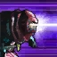

Malz
Malzahar the Prophet of the Void
Many men have gone mad beneath the glare of the Shurima sun, but it was during the night's chilling embrace that Malzahar relinquished his sanity. Malzahar was born a Seer, blessed with the gift of foresight. His talent, though unrefined, promised to be one of Runeterra's greatest boons, but destiny plotted him another course; his sensitivity to the roiling tides of fate allowed other, unwelcome things to tug at his subconscious mind. In his dreams, where the veil of separation is thinnest, a sinister thing beckoned. For some time, Malzahar was able to resist its prodding, but with each passing night the voice grew louder, or perhaps deeper, until he could withstand the call no more. He ventured into the desert without supplies, drawn by the lure of a specious charm. His destination: a lost civilization to the east, known to ancient texts as Icathia. Few believed such a place ever existed, and those who did were certain that the sands had long since devoured whatever remained. When Malzahar's cracked feet finally failed him, he found himself kneeling at the base of a bizarre crumbling obelisk. Beyond it lain the alien geometry of a ruined city and the giant decaying idols of dark and horrific gods. His eyes, seeing what others cannot, and what none should, were filled with the essence of the Void. His once shifting visions of the future were replaced with the immutable promise of Valoran beset by creatures of the Void. Standing alone, but not alone, amidst the echoing dunes, he noticed the familiar voice escape his own lips in a parched rasp, bearing three words whose weight trembled his knees: League of Legends. Now infused with the power of the void itself, Malzahar set off to the north to seek his fate.
Abilities
| Ability | Description |
|---|---|
 Summon Voidling Summon Voidling |
PASSIVE: On every fourth ability use, Malzahar summons a voidling for 21 seconds. There is a one second cooldown after summoning a voidling where further spell casts will not increment the counter.
After 7 seconds, the voidling grows, gaining 50% increased armor and base attack damage.
After 14 seconds, the voidling gains attack speed.
|
Call of the Void |
A(Active) Malzahar opens up two portals to the Void. After a short delay, power erupts from them, dealing magic damage and silencing all enemies caught between the portals. |
 Null Zone |
(Active) Malzahar creates a zone of negative energy for 5 seconds. The zone deals magic damage to enemies that stand in it for percentage of their max health each second. |
Maelific Visions |
(Active) Malzahar infects his target's mind, dealing magic damage every half seconds for 4 seconds. If the target dies while afflicted by the visions, they pass the curse on to a nearby enemy unit, refreshing the duration and restoring mana to Malzahar. Malzahar's Voidlings are attracted to affected units. |
| Nether Grasp | (Active) Malzahar grips his target in an engulfing void of energy and begins channeling, dealing magic damage every half second while suppressing the target for up to 2.5 seconds. |